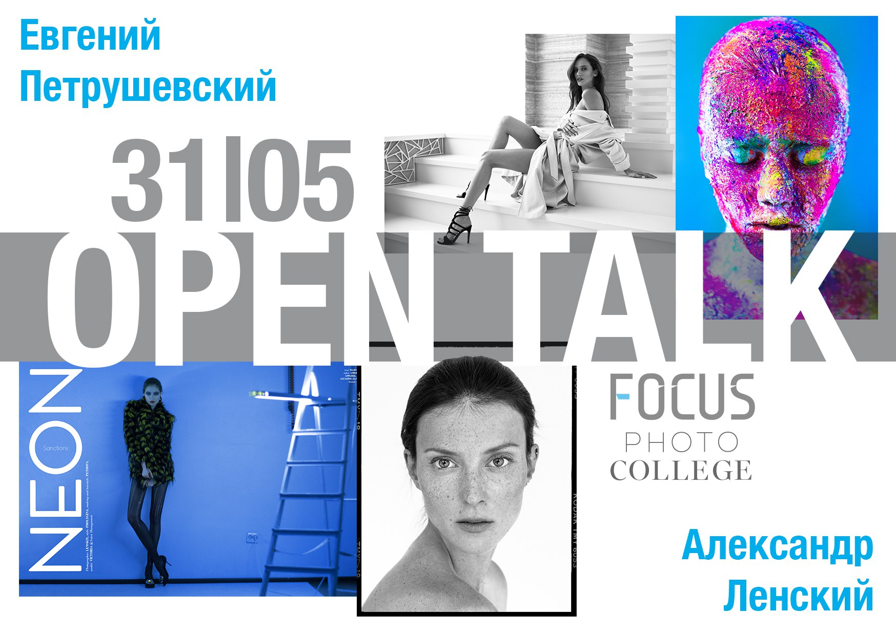

Это интересно!

Как начать снимать beauty
Beauty-съемка является, пожалуй, самым сложным и одним из самых интересных жанров в фотографии. Именно в этом виде съемки очень важна командная работа.
Все зависит и от кожи, выбранной вами модели, и от профессионализма визажиста, hair-стилиста, и от выбранной световой схемы, а также от работы фотографа и ретушера. Вот почему, выбирая команду, важно, чтобы все участники съемки были профи в своем деле
Реклама косметических средств, ювелирных украшений, ЗОЖ – везде будут прекрасные лица с идеальной персиковой кожей, длинными ресничками, и блеском в глазах.
Так как же начать снимать beauty?
Обратим внимание на каждого участника съемки:
- Визажист – именно от него зависит почти 50% успеха. Как визажист «сделает» кожу, оставляя ее естественной, сияющей и живой.
- Hair-стилист – аккуратная прическа, подходящая по стилю к общей идее съемки – такая же неотъемлемая составляющая классного снимка. Плюс ретушь волос довольно сложный и длительный процесс ретуши.
- Модель – от модели так же многое зависит, и тут необходимо обращать внимание не только на качество кожи, а она должна быть здоровой и чистой, а также на умение позировать перед камерой, задействовав только личико и эмоции.
- Фотограф – правильная оптика и световая схема помогут сделать кадры яркими и классными даже в формате RAW! Используй макро-объективы, портретники и даже теле-объективы. Большое количество источников света – не лучший вариант для Beauty-съемки, иногда можно обойтись портретной тарелкой и отражателем – и результат будет супер
- Ретушер – на этапе постпродакшена упор делается на сохранении естественности. В сети множество примеров beauty-работ с пластиковой кожей, измененными чертами лица и перерисовкой свето-теневого рисунка. И это то, как делать не нужно!

Как правильно подготовиться к выездной съемке?
После холодной длительной зимы как же приятно проводить съемки на природе, любуясь архитектурой и набережными Петербурга или отправиться на залив и сделать, по-настоящему, пляжную фотосессию.
Сейчас взять в аренду студийное оборудование не составляет проблемы, да и прайс на эту услугу в нашем городе адекватный. Поэтому хватай в руки свою камеру, бери в FOCUS крутое оборудование и GO снимать потрясающие картинки на улице!
Выездные съемки сейчас набирают дикую популярность. Ты не зависишь от солнца или его отсутствия, можешь снимать в любое время суток. Также ты можешь снимать там, где тебе хочется, будь то Рубинштейна или заброшенная усадьба в пригороде, карьеры или залив, парки или парковки – ты можешь снимать ВЕЗДЕ! И поверь, результат превзойдет твои ожидания!
Дружной командой FOCUS мы провели выездную съемку в парке 300-летия и теперь можем поделиться с вами полезными лайфхаками для проведения таких съемок.
- Если вы наметили подходящий день и выбрали площадку для съемки, то обязательно прибудьте на нее за пару часов до начала рабочего процесса для того, чтобы определить и встать на нужное место для идеальной картинки , выставить оборудование и подготовить всё необходимое.
- Старайтесь парковаться недалеко от съемочной площадки, так как переносить все оборудование от машины к месту съемки процесс утомительный, да и генератор вещь невообразимо тяжелая.
- Смотрите за погодой, при сильном ветре не используйте бумажные фоны, во-первых, ровно висеть он не будет точно, а во-вторых, однозначно порвется при попытке фиксации.
- Не забудьте про утяжелители для всех стоек – это важно, если вы не хотите испортить оборудование или покалечить модель упавшим на нее фоном.
- Если погода предвещает быть ветряной самый лучший вариант – это тканевый фон! О да, это очень красиво и динамично!
- Используйте солнце в качестве контрового света, ваша модель не будет щурить глазки и фото будет очень сочным.
- Сколько источников света использовать? Тут все зависит от поставленной задачи, но использовать студийные схемы из 3-5 источников света все же не стоит. - Захватите с собой рейл для одежды – ваш стилист скажет вам огромное спасибо и вещи не пострадают

Open Talk First pt «Open Talk» by FOCUS & Фотоколледж
Open talk – это серия встреч в формате открытого диалога по актуальным и животрепещущим темам с культовыми личностями в мире фотографии. 26 апреля состоится первая в серии встреча, спикерами которой станут Евгений Петрушевский и Александр Ленский. Тема: От сложного к простому: От editorial к модельным тестам.
Всё будет проходить в формате диалога, на котором Вы сможете обсудить актуальные моменты по данной теме, а особенностью встречи станет разбор вопросов, которые вы можете задать прямо СЕЙЧАС в КОММЕНТАРИЯХ.
В роли ведущего Open Talk выступит фотограф, блогер Андрей Ревенко. В рамках данной встречи Вы сможете узнать:
- Почему не все фотографы попадают в печатные издания.
- Для чего нужны модельные тесты.
- За счет чего сделать свои кадры качественными.
- Как не усложнять процесс и находить красоту в простом.
- Что самое главное в работе фотографа.
- Как проходит работа между фотографом и моделью.
- Эксклюзив: Первая фоторабота Александра Ленского.

Индивидуальные уроки по фотографии в Focus. Три уровня сложности.
Focus School - современная школа фотографии, актуальные методы съемки и обработки.
Ёмкие уроки - только полезная информация и никакой воды!
Продолжительность одного занятия 1,5 часа - 2 академических часа. Программа включает в себя:
- Экскурсия по залам фотостудии FOCUS - 15 минут, рассказ о фотозонах студии и о том, что и где снимать, в зависимости от идеи (не входит во время обучения).
- Выбор любого зала для консультации по фотосъемке и проведения занятия.
- Модель, прошедшая обучение в модельной школе, для отработки практики.
- Теория + съёмка 1 час.
- Разбор отснятого материала и советы по дальнейшему развитию вас как фотографа.
- Скидка 20% на любой зал студии FOCUS для отработки домашнего задания.
- Бесплатная онлайн консультация - разбор вашего домашнего задания.
- Ссылки на литературу по фотографии и сайты, которые помогут вам улучшить вашу базу и разовьют «насмотренность».